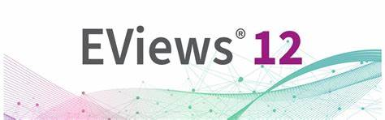
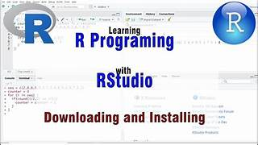

Mes Compétences
-
Bash
-

Eviews
-

html
-

Linux
-

Rstudio
Cherif Mamadou Aliou DIALLO
26 ans
7 Rue Auphan, 13003, Marseille
diallocherifaliou97@gmail.com
Je suis un étudiant passionné des datas et de sa securité. Mon objesctif est de devenir un Data Analyst
Coéquipier polyvalent, BAR/Restaurant OKINAWA, 2022-2023
Chargé de la Communication English Club, American Corner Ziguinchor (Sénégal), 2019-2020
Bachelor 1 IT - Ecole La Plateforme, 2023- à nos jours
licence Analyse et Politiques Economiques(en cours..), Université Clermont Auvergne, 2020 à nos jours
Baccalaureat S2, Lycée Djignabo de Ziguinchor, 2014-2017
Bash
Eviews
html
Linux
Rstudio